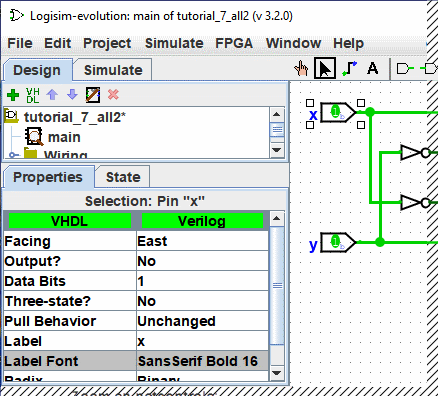

טבלת התכונות
לרכיבים רבים יש מאפיינים, שהם מאפיינים לקביעת התצורה של אופן הפעולה של הרכיב או מופיע. טבלת המאפיינים מיועדת לצפייה והצגה של ערכי תכונות של רכיב.
כדי לבחור את התכונות של הרכיב שברצונך להציג, לחץ על הרכיב באמצעות המקש עריכה כלי ( ). אתה יכול גם ללחוץ לחיצה ימנית או על הקש Control-לחץ על הרכיב ובחר הצג תכונות מהתפריט הקופץ. גַם,
מניפולציה של רכיב באמצעות הכלי Poke (
). אתה יכול גם ללחוץ לחיצה ימנית או על הקש Control-לחץ על הרכיב ובחר הצג תכונות מהתפריט הקופץ. גַם,
מניפולציה של רכיב באמצעות הכלי Poke ( ) או כלי טקסט (
) או כלי טקסט ( ) יציג את התכונות של רכיב זה.
) יציג את התכונות של רכיב זה.
צילום המסך שלהלן ממחיש כיצד הדברים נראים לאחר בחירת הקלט העליון של מעגל ה-XOR שלנו ו גלילה מטה כדי להציג את התכונה גופן תווית.

כדי לשנות ערך תכונה, לחץ על הערך. הממשק לשינוי התכונה יהיה תלוי באיזה תכונה שאתה משנה; במקרה של התכונה Label Font, תיבת דו-שיח תופיע להופיע לבחירת הגופן החדש; אבל כמה תכונות (כמו תווית) יאפשרו לך ערוך את הערך כשדות טקסט, בעוד שאחרים (כמו מיקום תווית) יציגו תפריט נפתח שממנו ניתן לבחור את הערך.
לכל סוג רכיב יש קבוצה שונה של תכונות; כדי ללמוד את משמעותם, עבור לתיעוד הרלוונטי בהפניה לספרייה.
אם בחרת רכיבים מרובים באמצעות כלי העריכה ( ), ואז טבלת התכונות
יציג תכונות המשותפות בין כל הרכיבים שנבחרו (למעט כל חוטים). אם הנבחר
לא לכולם יש את אותו ערך עבור התכונה, אז הערך המוצג יהיה ריק. אתה יכול
שנה את הערך עבור כל התכונה של כל הרכיבים שנבחרו בבת אחת באמצעות טבלת התכונות.
), ואז טבלת התכונות
יציג תכונות המשותפות בין כל הרכיבים שנבחרו (למעט כל חוטים). אם הנבחר
לא לכולם יש את אותו ערך עבור התכונה, אז הערך המוצג יהיה ריק. אתה יכול
שנה את הערך עבור כל התכונה של כל הרכיבים שנבחרו בבת אחת באמצעות טבלת התכונות.
הבא: מאפייני הכלי.